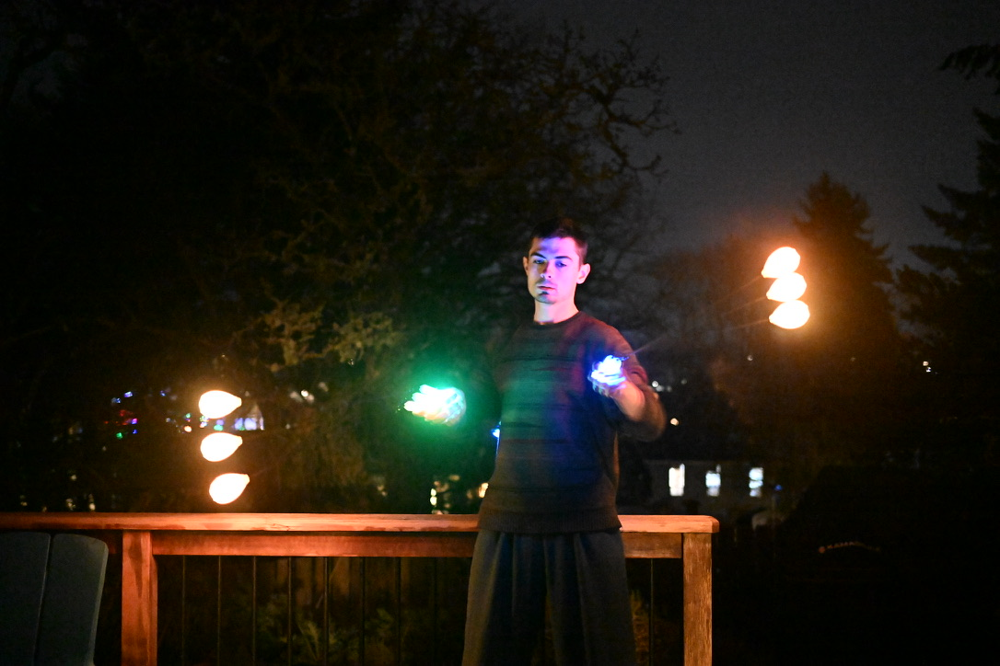
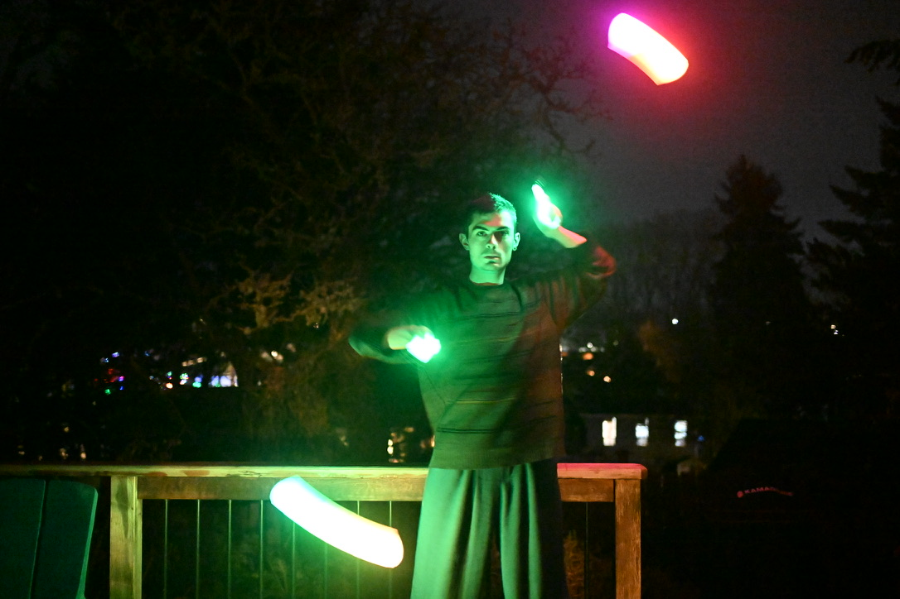
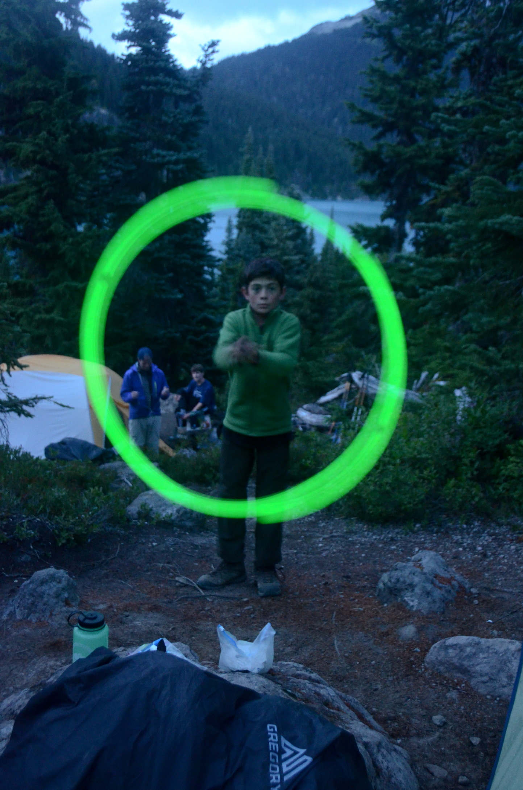
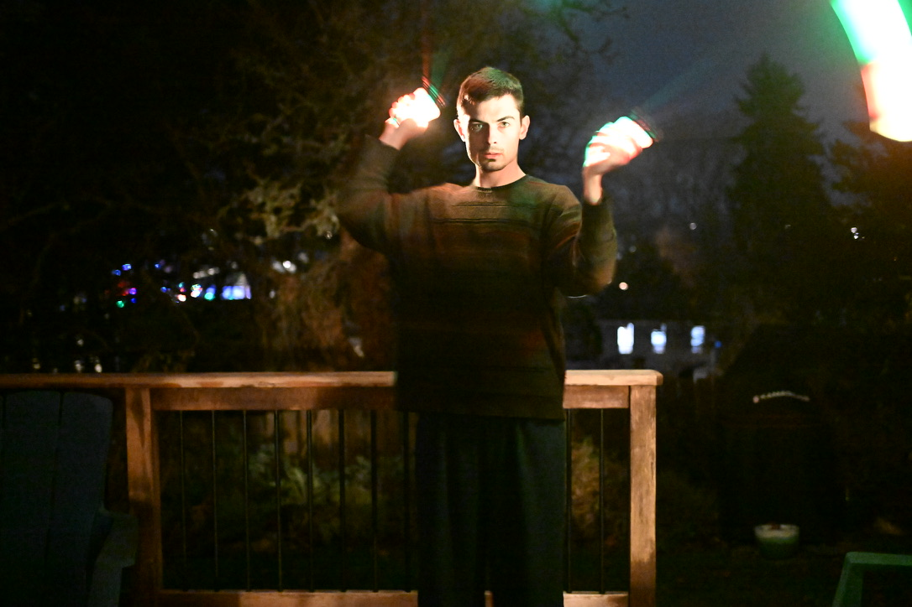
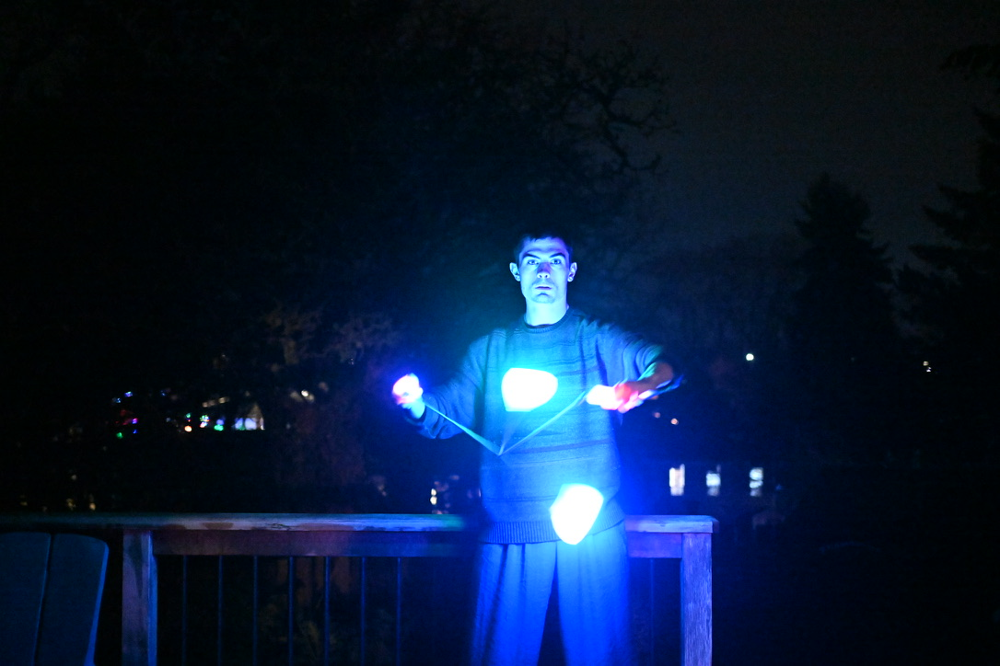
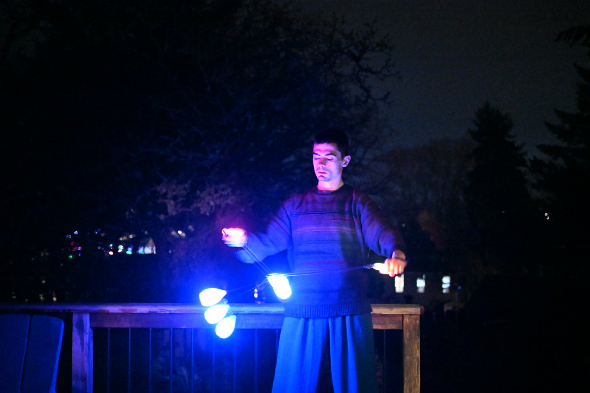

Poi dancing, or spinning, is a dance with tethered objects tied to strings.

Modern poi stemmed from a traditional Maori dance with shorter strings.

I discovered poi when I was 12 years old. Here's a photo!

I'm inspired the most by
this video of
Johnathan Alvarez spinning poi.

Nick Woosley's poi courses and youtube videos taught me everything I know about how to
spin poi; He was a huge influence on almost everyone who dances with poi today.

I'm currently experimenting with ways of integrating music with poi through
multidimensional motion sensors in the poi weights.

Experimenting with timing and trails under the stars.